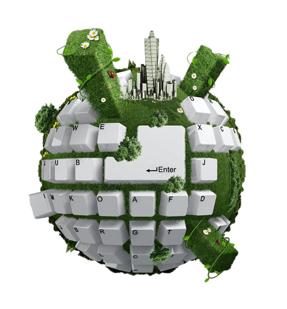

Urdaneta City
University

College of Information and
Technology education
CYBER SECURITY
Cyber security is the application of technologies, processes, and controls to protect systems, networks, programs, devices and data from cyber attacks.It aims to reduce the risk of cyber attacks and protect against the unauthorised exploitation of systems, networks, and technologies. Cyber security is the practice of defending computers, servers, mobile devices, electronic systems, networks, and data from malicious attacks. It's also known as information technology security or electronic information security. The term applies in a variety of contexts, from business to mobile computing, and can be divided into a few common categories.
Visit us to know more